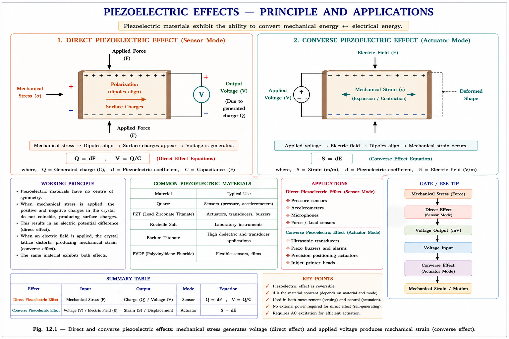
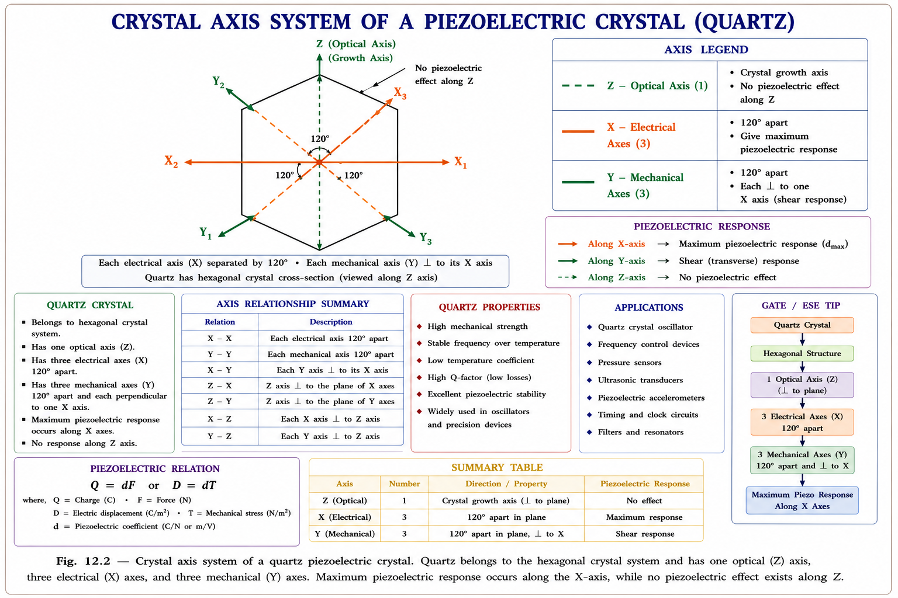
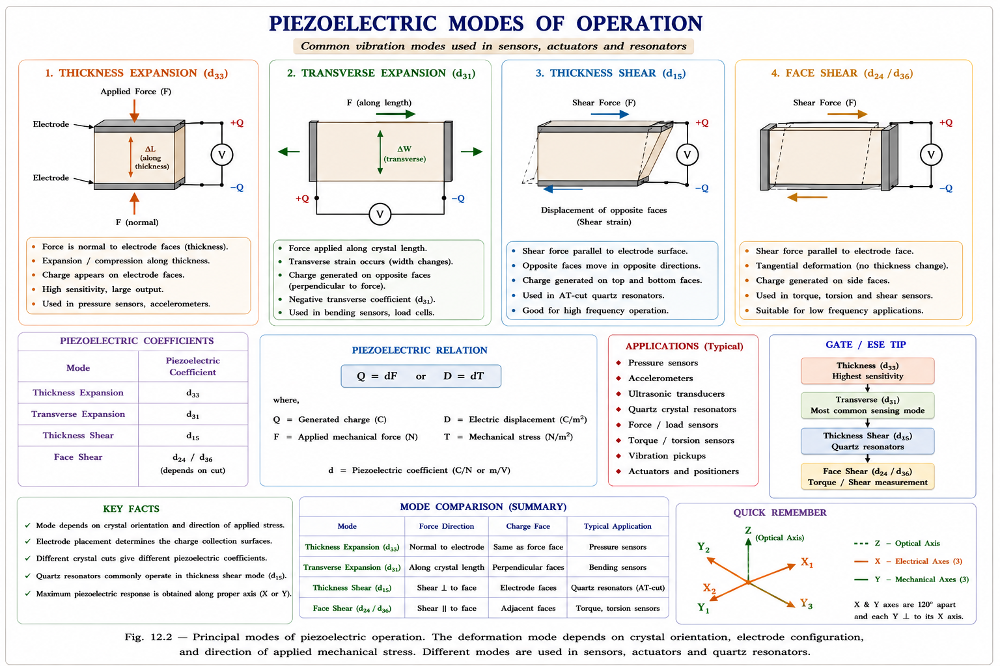
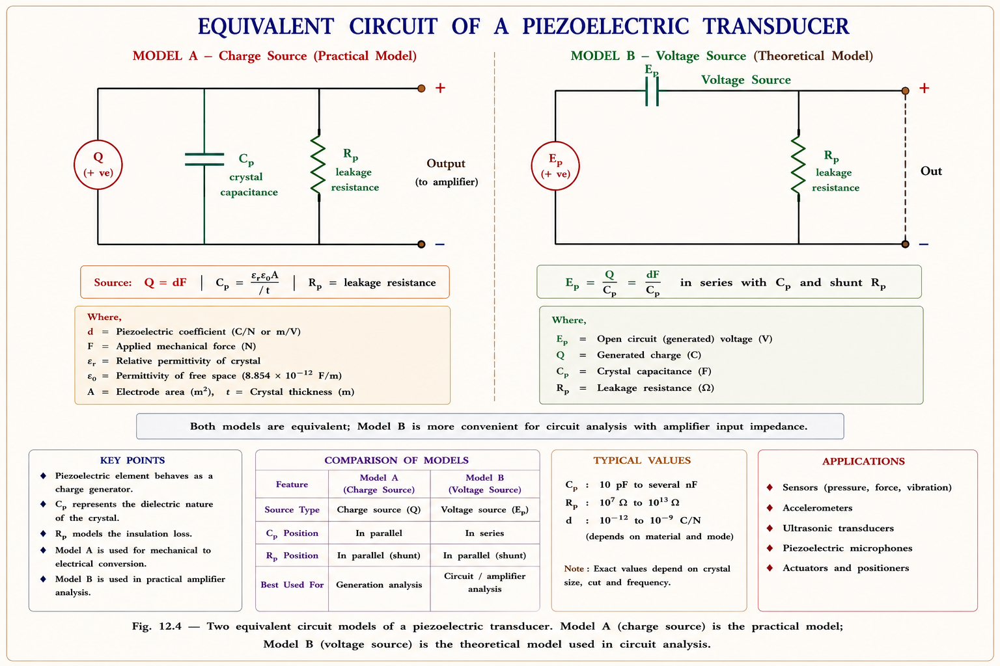
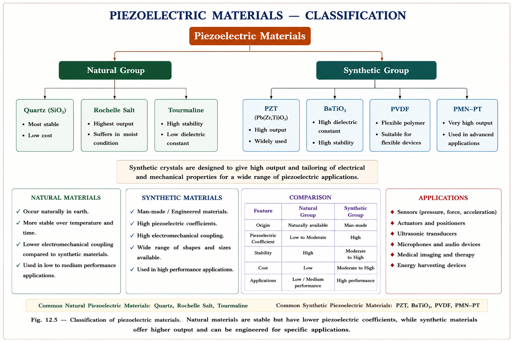
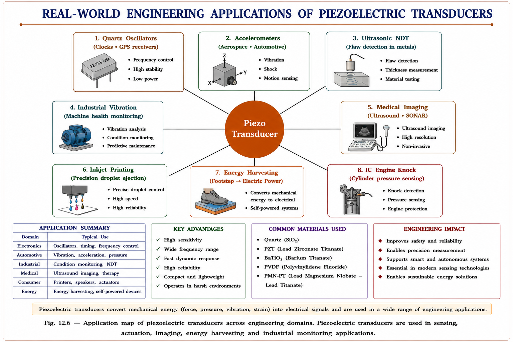

From the Greek piezein — to squeeze. A crystal that converts mechanical pressure directly into electrical voltage, and vice versa. One of the most fundamental active transducers used in accelerometers, ultrasonic systems, pressure sensors, and SONAR.
Every physical quantity we care about in engineering — pressure, force, acceleration, temperature, flow — exists in the mechanical world. But our measurement and control systems live in the electrical world. The fundamental engineering problem is: how do we translate a physical quantity into an electrical signal that can be processed, stored, and transmitted?
A transducer is the bridge between these two worlds. It converts one form of energy to another. Among all transducer mechanisms, the piezoelectric effect is one of the most elegant — it needs no external power source, responds in microseconds, has virtually no moving parts, and can operate across a wide frequency range from a few hertz to several megahertz.[1]
Piezoelectric transducers are active transducers — they do not require an external excitation voltage to generate an output. They self-generate an EMF when mechanical stress is applied. This is the direct piezoelectric effect. The converse (applying voltage to produce mechanical strain) makes them actuators too.
The piezoelectric effect was discovered by Pierre and Jacques Curie in 1880 while studying the properties of crystalline materials. They observed that mechanical compression of crystals like quartz produced an electric charge on the crystal surfaces. The next year, Gabriel Lippmann mathematically predicted the converse effect — which the Curies then confirmed experimentally.[2]
Where is it used in real engineering?
Imagine a perfectly symmetric molecule — positive and negative charge centres perfectly overlapping, like two people standing at the exact same spot. No net dipole. No electric field. Now squeeze the crystal. The symmetry breaks. Positive and negative charge centres shift relative to each other, creating a permanent dipole. Millions of these atomic dipoles line up across the crystal, and the net effect is a voltage appearing across the crystal faces. That is the piezoelectric effect.
Think of a piezoelectric crystal like a sponge full of water (charge). When you squeeze the sponge, water (charge) comes out one end. When you release it, the water returns. The harder you squeeze, the more water comes out — just like a larger mechanical force produces a larger voltage. The key difference: a piezoelectric crystal is a precise, linear, and repeatable "sponge."
Now consider the converse effect: if you apply an external voltage across the crystal faces, you force the charge centres apart or together, physically deforming the crystal. This makes the same crystal an actuator — the principle behind ultrasonic transmitters and piezo buzzers.

Not every crystalline material is piezoelectric. The key requirement is the absence of a centre of symmetry in the crystal structure. Of the 32 crystal classes, 21 are non-centrosymmetric, and of these, 20 exhibit piezoelectricity (the 21st, although non-centrosymmetric, possesses other symmetries that prevent piezoelectricity).[3]
Quartz (SiO₂) is the most important natural piezoelectric material. Each unit cell of quartz has a precisely defined arrangement of silicon and oxygen atoms. Understanding the three sets of axes that define a piezoelectric crystal is essential for understanding how different cuts produce different responses.

| Axis | Name | Count | Physical Role | GATE Relevance |
|---|---|---|---|---|
| Z-axis | Optical Axis | 1 | Crystal growth direction. Light propagates without birefringence along this axis. No piezoelectric effect along Z. | Medium |
| X-axis (×3) | Electrical Axis | 3 (at \(120^\circ\)) | Stress along X produces maximum electrical charge. Charge appears on faces perpendicular to X. This is the basis of longitudinal effect. | High |
| Y-axis (×3) | Mechanical Axis | 3 (⊥ to X) | Stress along Y also produces charge on X-perpendicular faces. This is the basis of transverse effect. Each Y is perpendicular to its corresponding X. | High |
If mechanical stress is applied along an X-axis, charge appears on faces perpendicular to X (longitudinal piezoelectric effect). If stress is applied along a Y-axis, charge also appears on faces perpendicular to the corresponding X-axis (transverse piezoelectric effect). This cross-axis coupling is fundamental to understanding crystal cuts.
Piezoelectric Effect (Direct): The phenomenon by which certain crystalline materials develop an electric polarisation — and hence a measurable surface charge — when subjected to mechanical stress. The charge is proportional to the applied force.[1]
Converse Piezoelectric Effect: The same crystal undergoes mechanical deformation (strain) when an electric field is applied across it. The strain is proportional to the applied field.
Piezoelectric Coefficient (d): The ratio of strain produced per unit electric field (converse), or equivalently, the charge developed per unit force (direct). Units: C/N or m/V.
The piezoelectric response of a crystal can be excited in several distinct modes depending on the orientation of the crystal cut relative to the applied stress and the electrode placement. Understanding these modes is critical for GATE and IES.[2]

The piezoelectric effect is direction sensitive. This is one of the most frequently tested concepts in GATE and IES:
A tensile (pulling) force applied along an X-axis produces a voltage of one polarity. A compressive (pushing) force along the same X-axis produces a voltage of the opposite polarity. The magnitude of the charge is the same; only the polarity reverses. This means a piezoelectric sensor can distinguish tension from compression — a property unique among most transducer types.
Furthermore, the magnitude and polarity of the induced surface charges are directly proportional to the magnitude and direction of the applied force \(F\). Mathematically: \(Q \propto F\), i.e., \(Q = dF\), where \(d\) is the piezoelectric charge coefficient.
The constitutive equations of piezoelectricity couple the mechanical and electrical state variables. For a linear piezoelectric material, the direct and converse effects are described by a set of coupled equations.[3]
Where: \(D_i\) = electric displacement (C/m²), \(d_{ij}\) = piezoelectric charge coefficient (C/N or m/V), \(T_j\) = mechanical stress tensor (N/m²), \(\varepsilon^T_{ik}\) = permittivity at constant stress, \(E_k\) = electric field (V/m), \(S_{ij}\) = mechanical strain, \(s^E_{ijkl}\) = elastic compliance at constant field.
For practical engineering analysis, we use simplified scalar forms:
Where: \(Q\) = charge generated (Coulombs), \(d\) = piezoelectric charge sensitivity coefficient (C/N), \(F\) = applied force (N).
Physical significance: The charge is independent of the crystal dimensions. A larger crystal of the same material and cut produces the same charge for the same force. This is a crucial point for GATE MCQs.
The crystal, when compressed, generates a charge \(Q\) across its internal capacitance \(C_p\). The open-circuit voltage is:
The capacitance of the crystal slab (treating it as a parallel plate capacitor) is:
Where: \(\varepsilon_0\) = permittivity of free space (8.854 × 10⁻¹² F/m), \(\varepsilon_r\) = relative permittivity of crystal, \(A\) = electrode area (m²), \(t\) = crystal thickness (m).
Substituting:
For a uniform stress \(\sigma = F/A\), we can write the output voltage as a function of stress and thickness:
The g-coefficient (voltage sensitivity) is the open-circuit electric field generated per unit mechanical stress. It is a material property. A high \(g\) means the material is a good voltage generator — ideal for sensors. Rochelle salt has a very high \(g\), which is why it was historically used in microphones.[2]
| Parameter | Symbol | Units | Significance | Affected by geometry? |
|---|---|---|---|---|
| Charge sensitivity | \(d\) | C/N | Charge per unit force; material constant | No |
| Voltage sensitivity | \(g\) | Vm/N | Voltage per unit stress·thickness; material constant | No |
| Output charge Q | \(Q = dF\) | C | Proportional to force only | No |
| Output voltage E₀ | \(E_0 = Q/C_p\) | V | Depends on \(C_p\) \(\rightarrow\) depends on geometry (t/A) | Yes |
A real piezoelectric transducer connected to a measuring system behaves as an electrical circuit — not just a charge source. Understanding the equivalent circuit is essential for selecting amplifiers, analysing frequency response, and understanding low-frequency limitations.[1]
The crystal itself can be modelled as a charge generator \(Q\) in parallel with the crystal capacitance \(C_p\) and the crystal leakage resistance \(R_p\):

When a piezoelectric transducer is connected to a measuring instrument (say, an oscilloscope or amplifier with input resistance \(R_{in}\) and input capacitance \(C_{in}\)), the complete circuit has a high-pass characteristic. The low-frequency cutoff is determined by:
The low-frequency \(-3\,\text{dB}\) point is \(f_L = 1/(2\pi\tau)\). This is why piezoelectric transducers cannot measure truly static (DC) forces — charges leak away through the finite resistance, and the output decays exponentially with time constant \(\tau\). They are inherently AC or dynamic measurement devices.[1]
Piezoelectric transducers cannot measure static or very slowly varying forces because the generated charge leaks away through the crystal's leakage resistance \(R_p\) and the input impedance of the measuring circuit. For DC force measurement, strain gauges or capacitive transducers are used instead.
A charge amplifier (using an op-amp with a feedback capacitor \(C_f\)) converts the charge \(Q\) directly to a voltage \(V_{out} = -Q/C_f\), making the output independent of cable capacitance. This dramatically improves both the low-frequency response and immunity to cable noise. Charge amplifiers are used in virtually all precision piezoelectric measurement systems.[4]
Piezoelectric materials fall into two broad categories: natural crystals that inherently possess the piezoelectric property, and synthetic materials that must be specially processed to acquire it. The choice of material significantly impacts sensitivity, temperature range, frequency response, and mechanical ruggedness.[2]

Synthetic materials like \(\text{BaTiO}_3\) and PZT are ceramic polycrystalline materials. In their natural state, the individual crystal grains have randomly oriented domains, so the piezoelectric effects cancel out. To make them piezoelectric, they must undergo a poling process:[2]
1. Heat the ceramic to a temperature above its Curie point (the temperature where spontaneous polarisation vanishes) to allow domain walls to move freely. 2. Apply a strong DC electric field (several kV/cm) across the material — this aligns all domains along the field direction. 3. Cool down while maintaining the field. The domains freeze in alignment. 4. Remove the field. The material retains a net polarisation and is now piezoelectric.
If a poled synthetic piezoelectric material is subsequently heated above its Curie temperature, the domains randomise again and the material permanently loses its piezoelectric property. For PZT, the Curie temperature is approximately 150–350°C depending on composition. For Rochelle salt, it is only about 45°C — this is why Rochelle salt has a narrow operating temperature range.[3]
| Material | Type | d-coeff. (pC/N) | Curie Temp. (°C) | Key Advantage | Key Limitation |
|---|---|---|---|---|---|
| Quartz (SiO₂) | Natural | 2.3 | 573 | Highest stability; low aging; excellent frequency stability | Very low charge output; must be X-cut or Y-cut |
| Rochelle Salt | Natural | 2300 | 45 | Extremely high voltage sensitivity; cheapest | Dissolves in water; useful only 18–45°C range |
| \(\text{BaTiO}_3\) | Synthetic | 190 | 120 | Good sensitivity; inexpensive | Low Curie temp; aging effects |
| PZT (Navy II) | Synthetic | 374 | 328 | High sensitivity + high Curie temp; most versatile | Contains lead (environmental concern) |
| PVDF | Polymer | 20–28 | 80 | Flexible; lightweight; large area sensors possible | Lower sensitivity; low Curie temp |
Piezoelectric transducers are active transducers because they generate their own EMF without requiring an external power supply. They are also classified as self-generating transducers. In contrast, a strain gauge (which changes resistance but needs an excitation voltage) is a passive transducer. This distinction is a very frequently tested MCQ in both GATE IN and GATE EE.
Piezoelectric transducers cannot be used for static (DC) force measurement. This is because the generated charge slowly leaks through the finite resistance in the circuit, causing the output to decay toward zero even if the force remains constant. They are only suitable for dynamic measurements (force, pressure, acceleration that change with time).
The charge generated \(Q = dF\) is independent of crystal dimensions (area and thickness). Only the material coefficient \(d\) and the applied force \(F\) determine the charge. However, the output voltage \(E_0 = Q/C_p\) does depend on geometry (through \(C_p = \varepsilon_0 \varepsilon_r A/t\)): thinner or smaller-area crystals produce higher voltage for the same charge.
Quartz: highest mechanical and chemical stability, widest temperature range (up to 573°C Curie), but lowest charge output. Rochelle salt: highest charge/voltage output (about 1000× quartz), but operates only in a narrow temperature range (18–45°C) and dissolves in moisture. PZT fills the middle ground with high output and reasonable temperature range, making it dominant in industrial applications.
Explanation: Piezoelectric transducers generate a charge \(Q = dF\). This charge leaks through the circuit resistance, so the output decays to zero even if the force remains constant. Static (non-changing) force cannot be measured — option (C). Dynamic pressure, vibration, and acoustic signals all vary with time and are ideal for piezoelectric sensors.
Explanation: \(E_0 = dFt/(\varepsilon_0 \varepsilon_r A)\). So \(E_0 \propto t/A\). Thicker crystal and smaller area → higher voltage. Note: charge \(Q = dF\) is independent of geometry, but voltage depends on \(t/A\) through the capacitance.
Explanation: The fundamental requirement for piezoelectricity is the absence of a centre of inversion symmetry. In centrosymmetric crystals, any mechanical deformation preserves the symmetry and the positive and negative charge centres shift identically — no net dipole moment results. Only in non-centrosymmetric crystals can a net polarisation be induced by mechanical stress.
Explanation: The piezoelectric effect is direction-sensitive. A compressive force deforms the crystal in the opposite sense to a tensile force of the same magnitude — charge centres shift the other way. This produces a voltage of opposite polarity but identical magnitude (since \(|Q| = d|F|\) regardless of sign of \(F\)).
Wrong: "Larger crystal area produces more charge."
Correct: Charge \(Q = dF\) depends only on the force and material
coefficient \(d\) — geometry does not matter. Voltage \(E_0 = dFt/(\varepsilon_0\varepsilon_r
A)\) depends on geometry. A larger area crystal produces lower voltage (larger \(C_p\)
means more charge is needed for the same voltage).
Because piezoelectric transducers have no moving parts and look "inert," students often classify them as passive transducers. They are active — they convert mechanical energy directly to electrical energy with no external power supply required.
These are the same thing — the temperature above which a material loses its spontaneous polarisation and hence its piezoelectric/ferroelectric properties. For quartz (natural), the Curie point (573°C) is so high it is rarely a concern. For Rochelle salt (45°C), it severely limits practical use. For PZT (~200–350°C), it determines the maximum operating temperature.
Rochelle salt (natural) has the highest \(d\) coefficient, but PZT (synthetic) is superior in nearly every other metric: wider temperature range, higher mechanical strength, better frequency range, and easily manufactured into any shape. The "synthetic" label does not mean inferior.
Students often use only \(R_p\) in the time constant. The correct time constant uses the parallel combination of \(R_p\) (crystal leakage) and \(R_{in}\) (amplifier input resistance), and the sum of \(C_p\), cable capacitance \(C_{cable}\), and \(C_{in}\). Forgetting cable capacitance is a common error in numerical problems.
A force applied exactly along the Z-axis (optical axis) of a quartz crystal produces no piezoelectric charge. This axis is used for crystal growth, not for piezo sensing. Forces must have a component along the X (electrical) or Y (mechanical) axes to produce output.

| Application | Mode Used | Material | Engineering Significance |
|---|---|---|---|
| Accelerometers (ICP®) | Thickness compression/shear | PZT | Seismic testing, automotive crash sensing, aerospace structure monitoring. Built-in charge amplifier. |
| Ultrasonic NDT | Thickness expansion (transmit & receive) | PZT | Same transducer pulses ultrasound into a metal, then listens for reflections from internal cracks. |
| Medical Ultrasound | Thickness expansion array | PZT-5H arrays | Phased arrays of PZT elements steer ultrasound beam electronically for 2D/3D imaging. |
| Knock Sensors (Engines) | Bending / compression | PZT | Detect abnormal combustion (knock). ECU retards ignition timing to prevent engine damage. |
| Quartz Crystal Oscillators | Thickness shear (AT-cut) | Quartz | AT-cut quartz has near-zero temperature coefficient at 25°C — the basis of all precision oscillators in electronics. |
"Z is for Zero piezo. X is for electrical eXcitement. Y is Yield (mechanical)." → The Z-axis (optical) gives zero piezo effect. The X-axes (electrical) give charge when stressed. The Y-axes (mechanical) are perpendicular to X and also give charge. Remember: force on X-face → charge on X-face (longitudinal). Force on Y-face → charge on X-face (transverse).
Quartz: Stable, silent (low output), survives high heat. Rochelle salt: Loud (high output) but fragile — dislikes heat and moisture. PZT: The professional choice — high output AND survives heat. Arrange by output: Quartz < PZT < Rochelle salt.
Imagine a pile of bar magnets in random orientations (unpoled ceramic) — they cancel out. Now apply a strong external magnetic field and they all align (poling with DC electric field at high temperature). Cool them while aligned and they stay aligned (freeze domains). Heat them above Curie temperature and they scramble again (property lost). This exact story maps onto the poling process of PZT — just replace "magnetic field" with "electric field" and "magnet" with "ferroelectric domain."
Squeeze the crystal → Q = dF (charge) → E₀ = Q/Cₚ (voltage) → Cₚ = ε₀εᵣA/t (capacitance depends on geometry). So: bigger area → bigger Cₚ → smaller E₀. Thicker crystal → smaller Cₚ → larger E₀. Charge Q doesn't care about geometry. Only voltage E₀ does.
Ask any conceptual, derivation, or problem-solving question on this chapter.
Active, self-generating transducer. Mechanical stress \(\rightarrow\) electric charge (direct). Electric field \(\rightarrow\) mechanical strain (converse). Requires non-centrosymmetric crystal.
\(Q = dF\) · \(E_0 = Q/C_p = dFt/(\varepsilon_0\varepsilon_r A)\) · \(g = d/(\varepsilon_0\varepsilon_r)\) · \(\tau = RC\) · \(f_L = 1/(2\pi\tau)\)
Z (optical) = 1, no piezo. X (electrical) = 3 at \(120^\circ\), max charge on X-face. Y (mechanical) = 3, each \(\perp\) to corresponding X.
Output: Rochelle > PZT > \(\text{BaTiO}_3\) > Quartz. Stability: Quartz > PZT > \(\text{BaTiO}_3\) > Rochelle. PZT is best all-round.
Cannot measure static force — charge leaks through R. Inherently high-pass (AC) device. Solution: use charge amplifier for low-frequency extension.
Q is geometry-independent. Voltage \(E_0\) depends on \(t/A\). Direction reversal \(\rightarrow\) polarity reversal, same magnitude. Curie temp loss is permanent for synthetic.
Capacitive Transducers — principle of variable capacitance, variable-gap, variable-area, and variable-permittivity types; equivalent circuit; LVDT comparison; GATE and IES treatment with complete derivations and previous year questions.
All technical content is derived from the following standard textbooks. All explanations, derivations, diagrams, and GATE/IES conceptual treatments are original to Aarova AI.